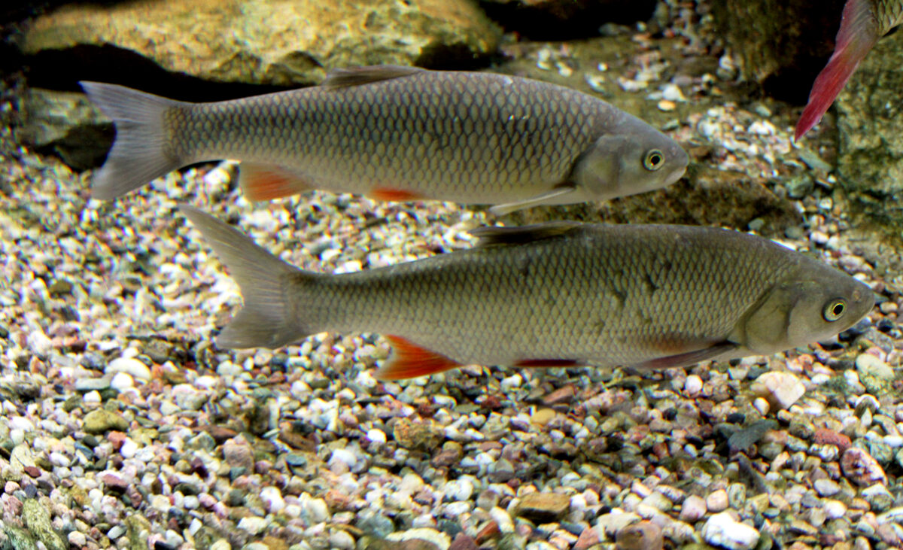

Rozpoznawanie i biologia klenia
Wygląd i cechy rozpoznawcze
Kleń ma ciało wydłużone, walcowate, niemal okrągłe w przekroju, co odróżnia go od bardziej ścieśnionych bocznie karpiowatych. Najbardziej charakterystyczna jest masywna, szeroka głowa z dużym, końcowym otworem gębowym — stąd zresztą łacińska nazwa gatunkowa cephalus. Łuski są duże i wyraziste, w linii bocznej liczy się ich zwykle 44–46, a każda ma ciemniejszą obwódkę, przez co boki ryby wyglądają jak pokryte siatkowym deseniem. Grzbiet jest ciemny, szarozielony, boki srebrzyste z mosiężnym połyskiem, płetwy brzuszne i odbytowa pomarańczowe do czerwonawych, a płetwa odbytowa wyraźnie zaokrąglona. Przeciętne klenie łowione w polskich rzekach mierzą 30–45 cm i ważą 0,5–1,5 kg, ale gatunek dorasta do ponad 60 cm i 4 kg. Stare osobniki nabierają niemal byczej, krępej sylwetki w przedniej części ciała.
Kleń, jaź czy płoć — jak nie pomylić gatunków
Kluczową cechą odróżniającą klenia od jazia jest płetwa odbytowa: u klenia jej krawędź jest zaokrąglona i wypukła, u jazia wcięta. Druga pewna cecha to łuski — kleń ma je duże i wyraźnie obwiedzione (44–46 w linii bocznej), jaź drobne i liczne (55–61). Głowa klenia jest szeroka i masywna, z dużym pyskiem, podczas gdy jaź ma głowę małą, krótką i delikatną. Od płoci kleń różni się walcowatym ciałem, większym pyskiem i brakiem czerwonej tęczówki — oko klenia jest raczej żółtawe. Młode klenie i jazie bywają trudne do rozróżnienia w pierwszych sekundach po wyholowaniu, dlatego najlepiej sprawdzać dwie cechy jednocześnie: kształt płetwy odbytowej i wielkość łuski. Poprawna identyfikacja ma znaczenie praktyczne, bo regulaminy wód mogą różnie traktować oba gatunki.
Środowisko i występowanie w Polsce
Kleń to gatunek typowo rzeczny, obecny niemal w całym kraju — od podgórskich odcinków krainy brzany po duże rzeki nizinne. Najliczniej zasiedla rzeki średniej wielkości o wyraźnym nurcie, kamienisto-żwirowym lub piaszczystym dnie i urozmaiconym brzegu: Dunajec, San, Wisłokę, Pilicę, Wartę, Drwęcę, Bóbr i dziesiątki podobnych wód. Spotyka się go także w Wiśle i Odrze, w kanałach, a sporadycznie w zbiornikach zaporowych i jeziorach przepływowych, choć stojąca woda nie jest jego żywiołem. Ulubione stanowiska klenia to podmyte brzegi, nawisy drzew i krzewów, rynny za głazami, krawędzie bystrzy oraz cienie mostów i kładek. Jest dość odporny na wahania temperatury i umiarkowane zanieczyszczenie, dzięki czemu utrzymuje się również w rzekach przepływających przez miasta, gdzie potrafi tworzyć zaskakująco silne populacje.
Biologia i tarło
Klenie dojrzewają płciowo w wieku 3–5 lat, samce zwykle rok wcześniej niż samice. Tarło przypada na okres od maja do czerwca, gdy woda ogrzeje się do około 15–18 stopni Celsjusza, i często przebiega porcjami — jedna samica może składać ikrę kilkukrotnie w ciągu sezonu. Trące się ryby gromadzą się na płytkich, szybko płynących odcinkach o żwirowym dnie, a samce pokrywają się wówczas wyraźną wysypką perłową. Samica składa od kilkudziesięciu do dwustu tysięcy ziaren lepkiej ikry przyklejającej się do kamieni i żwiru. Narybek początkowo trzyma się przybrzeżnych płycizn w stadkach, z wiekiem ryby stają się coraz bardziej samotnicze i terytorialne. Kleń rośnie wolno — ryba czterdziestocentymetrowa może mieć dziesięć i więcej lat — a dożywa nawet kilkunastu do dwudziestu kilku lat, dlatego duże osobniki zasługują na szczególny szacunek.
Żerowanie i przepisy
Zwyczaje żerowania według pór roku
Kleń jest klasycznym przykładem ryby wszystkożernej i oportunistycznej — zjada praktycznie wszystko, co niesie rzeka. Wiosną żeruje głównie przy dnie, zbierając larwy owadów, kiełże, ślimaki i robaki wypłukiwane przez wysoką wodę. Latem znaczną część diety stanowią owady spadające z nadbrzeżnych drzew — chrząszcze, koniki polne, gąsienice — a także dojrzewające owoce: czereśnie, wiśnie i morwy opadające do wody potrafią wywołać regularne żerowanie pod konkretnym drzewem. Duże klenie są przy tym aktywnymi drapieżnikami i regularnie polują na narybek, raki oraz żaby. Jesienią ryby przechodzą na cięższy pokarm zwierzęcy i intensywnie żerują przed zimą. Co istotne, kleń — w odróżnieniu od wielu karpiowatych — żeruje także zimą: w słoneczne, łagodne dni pobiera pokarm na głębszych, spokojniejszych stanowiskach, dzięki czemu jest jednym z niewielu realnych celów rzecznego wędkarza w styczniu czy lutym.
Wymiar ochronny, okres ochronny i limity
Według ogólnych zasad obowiązujących w wodach Polskiego Związku Wędkarskiego wymiar ochronny klenia wynosi orientacyjnie 25 cm; gatunek zwykle nie ma ogólnokrajowego okresu ochronnego, a limity dobowe bywają określane sztukowo lub łącznie z innymi karpiowatymi, zależnie od regulaminu. Należy jednak stanowczo zaznaczyć, że okręgi PZW oraz gospodarze wód krainy pstrąga i lipienia czy łowisk specjalnych wprowadzają własne, nierzadko surowsze regulacje — podwyższone wymiary, limity, strefy złów i wypuść albo dodatkowe okresy ochronne. Na wodach górskich kleń bywa objęty odmiennymi zasadami niż na nizinnych. Dlatego przed każdym wyjazdem trzeba zweryfikować aktualne zezwolenie i regulamin okręgu, na którego wodzie zamierzamy łowić; przepisy są aktualizowane co sezon i poleganie na ubiegłorocznych informacjach to częsty błąd.
Metody połowu
Grunt, feeder i spławik
Metody gruntowe i spławikowe pozwalają łowić klenie przez cały rok. Feeder lub lekka gruntówka z koszykiem 20–50 g sprawdza się na rynnach i pod przeciwległym brzegiem; na haku nr 8–12 dobrze pracują białe robaki, dendrobeny, kostka sera żółtego, ciasto, kukurydza, a latem czereśnia lub kawałek parówki — kleń słynie z akceptowania nietypowych przynęt. Przypony 0,16–0,20 mm są rozsądnym kompromisem między delikatnością a siłą ryby w nurcie. Przepływanka to metoda wręcz stworzona do klenia: bolonka 5–7 m, spławik 3–8 g i przepuszczanie zestawu wzdłuż podmytych brzegów oraz pod nawisami, z przytrzymaniami unoszącymi przynętę. Zimą skuteczny bywa drobny zestaw gruntowy z pojedynczym białym robakiem lub kawałkiem sera, podany w głębszy, spokojny rynnowy dołek i łowiony cierpliwie, bez częstego przerzucania.
Spinning i mucha
Spinningowy połów kleni to dynamiczna, chodzona wędkarka. Podstawowe przynęty to małe woblery 3–6 cm imitujące owady, chrząszcze lub narybek, prowadzone w dół i w poprzek nurtu, często z samym tylko kontrolowanym spływem, oraz obrotówki nr 0–2, które kleń atakuje zdecydowanie. Uzupełnieniem są drobne cykady i miniaturowe gumy na lekkich główkach. Zestaw: lekka wędka do 10–12 g, cienka plecionka, przypon fluorocarbonowy 0,18–0,22 mm. Rzuty powinny być celne — pod sam nawis, przy zatopionej gałęzi — bo kleń rzadko goni przynętę daleko od stanowiska. Dla muszkarza kleń to gatunek pierwszoplanowy: latem znakomicie działają duże suche muchy, a zwłaszcza imitacje chrząszczy, mrówek i koników polnych kładzione z wyraźnym plaśnięciem pod gałęziami; poza sezonem powierzchniowym skuteczne są nimfy i małe streamery prowadzone przy dnie.
Taktyka łowienia i nęcenie
O sukcesie w łowieniu kleni decyduje przede wszystkim podejście. To ryba o doskonałym wzroku, stojąca często tuż pod brzegiem — wystarczy cień, drganie podłoża lub jaskrawa kurtka, by stado zniknęło w nurcie na długie minuty. Poruszamy się wolno, wykorzystujemy zarośla jako zasłonę, podchodzimy stanowisko od dołu rzeki i wykonujemy pierwszy rzut jeszcze sprzed linii brzegu. Najlepsze miejsca to nawisy drzew, podmyte zakola, granice nurtu i spokojnej wody, główki oraz cienie mostów. W metodach spokojnego spodu nęcimy oszczędnie: kilka kul ciężkiej zanęty z serem, robakami lub kukurydzą, a latem garść pokrojonych czereśni pod owocującym drzewem potrafi skupić ryby w punkcie. Po wyholowaniu jednej ryby warto dać stanowisku odpocząć lub przejść na kolejne — klenie łowi się raczej pojedynczo, obchodząc w ciągu dnia wiele miejscówek.
Okazy, kuchnia i ciekawostki
Rekordy Polski — orientacyjnie
Podobnie jak w przypadku innych gatunków, dane rekordowe trzeba traktować z rezerwą — rejestry prowadzone przez redakcje wędkarskie i PZW notują klenie rekordowe o masie około 4 kg i długości przekraczającej 60 cm, choć weryfikacja najstarszych zgłoszeń bywa niemożliwa. W realiach przeciętnej polskiej rzeki kleń ponad 2 kg to już ryba wybitna, a pięćdziesięciocentymetrowy osobnik stanowi trofeum, na które wielu wędkarzy pracuje sezonami. Największe klenie pochodzą zwykle z dużych rzek południa kraju oraz z odcinków rzadko odwiedzanych przez wędkarzy, gdzie ryby mogą spokojnie dożyć sędziwego wieku. Wolne tempo wzrostu gatunku oznacza, że okazowy kleń ma kilkanaście lat — to argument, by największe osobniki wypuszczać niezależnie od litery regulaminu.
Wartość kulinarna i zasady C&R
Kulinarnie kleń oceniany jest przeciętnie: mięso ma sporo drobnych ości widlastych i latem może mieć mulisty posmak, lepsze jest u ryb łowionych w chłodnej wodzie. Tradycyjne sposoby przyrządzania to smażenie po gęstym ponacinaniu boków, marynowanie oraz kotlety z mięsa mielonego, w których ości przestają być problemem. Ze względu na umiarkowaną wartość konsumpcyjną i wolny wzrost gatunku bardzo wielu wędkarzy łowi klenie wyłącznie na zasadzie złów i wypuść. Przy C&R stosujemy haki bezzadziorowe lub z dociśniętym zadziorem, podbierak z gumowaną siatką i mokre ręce; rybę odhaczamy nad wodą lub matą, skracamy sesję zdjęciową do kilkunastu sekund i wypuszczamy w spokojniejszej wodzie, podtrzymując ją głową pod prąd do pełnego odzyskania sił. Kleń jest rybą wytrzymałą i właściwie traktowany znosi przetrzymanie bardzo dobrze.
Ciekawostki
Kleń uchodzi za rybę o jednym z najszerszych jadłospisów wśród naszych słodkowodnych gatunków — w żołądkach dużych osobników znajdowano narybek, raki, żaby, a nawet drobne gryzonie, które wpadły do wody. Słynna jest jego słabość do owoców: pod nadrzecznymi czereśniami i morwami klenie potrafią dyżurować całymi tygodniami, czekając na opadające owoce. Dawniej był jednym z podstawowych gatunków klasycznej polskiej szkoły spinningu — to na kleniach pokolenia wędkarzy uczyły się prowadzenia małych woblerów w nurcie. Gatunek przez lata figurował w literaturze pod nazwą Leuciscus cephalus, zanim systematycy przenieśli go do rodzaju Squalius. Ciekawostką jest też jego miejska odporność: klenie regularnie obserwuje się z mostów w centrach dużych miast, gdzie stoją w cieniu filarów i zbierają wszystko, co niesie rzeka.
FAQ — najczęstsze pytania
Jak odróżnić klenia od jazia?
Najpewniej po płetwie odbytowej i łusce: kleń ma płetwę odbytową zaokrągloną, wypukłą, oraz duże łuski z ciemną obwódką (44–46 w linii bocznej), a jaź płetwę wciętą i łuski drobne (55–61). Pomocniczo — kleń ma masywną, szeroką głowę z dużym pyskiem i walcowate ciało, jaź głowę małą i sylwetkę wyższą, bardziej ścieśnioną bocznie.
Czy klenia można łowić zimą?
Tak, kleń należy do karpiowatych, które żerują również zimą, choć wolniej i krócej. Najlepsze są łagodne, słoneczne dni i głębsze, spokojne rynny, gdzie ryby zimują. Sprawdza się delikatny zestaw gruntowy z białym robakiem lub serem oraz cierpliwa, statyczna prezentacja. Zawsze należy sprawdzić, czy regulamin danej wody dopuszcza połów w okresie zimowym.
Jakie przynęty są najlepsze na klenia?
Wybór zależy od pory roku: wiosną i jesienią robaki, ser i przynęty gruntowe, latem owady, owoce (czereśnia, morwa) oraz przynęty powierzchniowe — suche muchy i imitacje chrząszczy. Spinningowo skuteczne są małe woblery 3–6 cm i obrotówki nr 0–2. Kleń jest wszystkożerny, więc warto eksperymentować, ale prezentacja zawsze musi być cicha i naturalna.
Jaki jest wymiar ochronny klenia?
Orientacyjnie, według ogólnych zasad PZW, wymiar ochronny klenia wynosi 25 cm. Okręgi PZW i gospodarze łowisk mogą jednak stosować wymiary podwyższone, limity dobowe lub dodatkowe ograniczenia, zwłaszcza na wodach górskich, dlatego przed połowem trzeba każdorazowo sprawdzić aktualne zezwolenie i regulamin danego okręgu.
Źródła i weryfikacja
Treści na tej stronie mają charakter przeglądowy i edukacyjny. Wymiary ochronne, okresy ochronne i limity podano orientacyjnie, według ogólnych zasad Polskiego Związku Wędkarskiego na dzień publikacji — poszczególne okręgi i gospodarze łowisk stosują własne regulaminy, dlatego przed każdym połowem należy zweryfikować aktualne zezwolenie, regulamin właściwego okręgu oraz informacje dostępne na pzw.org.pl. Materiał nie stanowi gwarancji wyników połowu. Zobacz też: kalendarz brań klenia — kiedy bierze najlepiej.